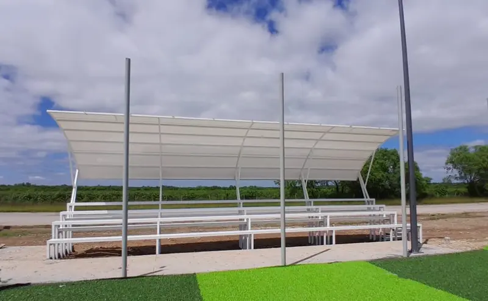

Cuánto cuesta una grada para cancha de fútbol: precios 2026
Catálogo abierto y actualizado: desde $49,500 MXN para gradas móviles de 12 personas hasta $245,000 MXN para gradas fijas de 150. Aquí están los 12 modelos, qué incluye el precio y los 5 factores que mueven la cifra final.

- Rango de precios 2026: desde $49,500 MXN (móviles 12) hasta $245,000 MXN (150 personas) — 12 modelos en catálogo.
- Modelo más vendido: Grada 75 personas con techo lona a $118,000 MXN — la mejor relación precio/capacidad.
- Grada INIFED (única certificada para escuelas públicas): $105,000 MXN.
- Todos los precios son + IVA y NO incluyen flete ni instalación (se cotiza aparte según destino).
La primera pregunta que llega por WhatsApp a Sportmaster nunca falla: ¿cuánto cuesta una grada para mi cancha? Y la respuesta honesta es: depende — pero no de variables ocultas, sino de tres factores claros (capacidad, material del techo y ubicación de la obra).
Este artículo abre el catálogo de precios 2026 completo. Los doce modelos, sus capacidades, sus medidas y el precio neto que paga un cliente al confirmar pedido en planta Monterrey. Sin letra chica.
Tabla completa de precios 2026
Estos son los precios netos de catálogo, vigentes desde enero 2026. Aplican a fabricación estándar con materiales certificados y pintura electrostática horneada. Capacidades verificadas en plano constructivo.
| Modelo | Capacidad | Material techo | Dimensiones | Precio MXN |
|---|---|---|---|---|
| Gradas Móviles 12 Asientos | 12 (con ruedas) | Sin techo | 3 × 1.30 × 0.70 m | $49,500 |
| Grada Flex 35 · Lona | 35 (pádel) | Lona | 5 × 1.45 × 3.00 m | $78,000 |
| Grada 35 · Lona | 35 | Lona curvo | 10 × 1.50 × 3.50 m | $78,000 |
| Grada Flex 35 · Policarbonato | 35 (pádel) | Policarbonato | 5 × 1.45 × 3.00 m | $88,000 |
| Grada 35 · Policarbonato | 35 | Policarbonato curvo | 10 × 1.50 × 3.50 m | $88,000 |
| Grada 50 · Lona | 50 | Lona curvo | 10 × 1.50 × 3.50 m | $99,500 |
| Grada 50 · INIFED | 50 | Policarbonato 6mm | 10 × 1.50 × 3.50 m | $105,000 |
| Grada 75 · Lona | 75 | Lona curvo | 10 × 2.00 × 3.50 m | $118,000 |
| Grada 75 · Policarbonato | 75 | Policarbonato curvo | 10 × 2.00 × 3.50 m | $135,000 |
| Grada 100 · Techo Recto | 100 | Lona recto | 10 × 2.00 × 3.50 m | $138,000 |
| Grada 150 · Lona | 150 | Lona curvo | 20 × 2.00 × 3.50 m | $245,000 |
| Grada 150 · Galvanizada | 150 | Lámina galvanizada | 20 × 2.00 × 3.50 m | $245,000 |
Todos los precios son más IVA del 16%, no incluyen flete desde planta Monterrey ni instalación en sitio. La fabricación toma entre 10 y 18 días hábiles según modelo y temporada.
Qué incluye el precio y qué NO
Antes de comparar con otro proveedor, conviene saber exactamente qué te entrega Sportmaster por la cifra del catálogo. Es el detalle donde muchas cotizaciones aparentemente más baratas terminan saliendo más caras.
El precio sí incluye:
- Estructura completa en PTR (perfil tubular rectangular) calibre certificado, ensamblada en planta
- Recubrimiento anticorrosivo de fondo + pintura electrostática horneada (color estándar verde, amarillo, azul, gris o blanco)
- Techo en lona, policarbonato o lámina galvanizada según modelo elegido
- Ficha técnica en PDF con dimensiones, materiales y especificaciones
- Garantía escrita por estructura y acabado
- Embalaje seguro para tránsito en camión
El precio NO incluye:
- IVA (16% adicional)
- Flete a la obra (se cotiza por destino)
- Maniobra de instalación en sitio
- Dados de concreto de cimentación (los hace el cliente con sus albañiles o se cotizan aparte)
- Memoria de cálculo firmada por ingeniero (solo incluida en modelo INIFED)
- Personalizaciones: colores especiales, logo serigrafiado en techo, asientos individuales
Los 5 factores que afectan el costo final
Si comparas dos cotizaciones del mismo "tamaño" de grada y ves una diferencia grande, casi siempre la explicación está en uno de estos cinco puntos. Vale la pena pedir el desglose.
1. Capacidad (más espectadores = más material)
El factor más obvio: cuantos más asientos, más metros lineales de PTR, más superficie de techo y más placas de cimentación. El salto de capacidad no es lineal: una grada de 50 personas no cuesta 50% más que una de 35, porque la estructura base ya está optimizada. Donde sí salta el precio es de 75 a 150 personas, porque cambian a doble módulo (de 10 a 20 metros de largo).
2. Material del techo (lona vs policarbonato vs galvanizada)
El techo es el componente que más mueve el precio entre dos gradas del mismo aforo. Cada material tiene su uso:
- Lona PVC reforzado: la opción más económica y la más vendida. Aguanta 8-10 años a la intemperie. Buena para canchas privadas, clubes y obras con presupuesto ajustado.
- Policarbonato 6 mm: traslúcido, deja pasar luz natural, resiste impactos de granizo y UV. Se elige para escuelas, INIFED y proyectos donde se quiere visibilidad superior. Sube el precio entre 12% y 16%.
- Lámina galvanizada: la más resistente a viento extremo y a vandalismo. Se prefiere en municipios, espacios públicos sin vigilancia y zonas costeras. Mismo precio que lona en formato 150 personas porque compensa el calibre.
3. Ubicación de la obra (flete varía $5,000-$25,000 MXN)
Sportmaster fabrica en Monterrey, Nuevo León. Desde ahí se factura el flete según distancia: $5,000-$10,000 MXN al norte del país (Coahuila, Tamaulipas, Chihuahua, Sinaloa), $12,000-$18,000 MXN al centro (CDMX, Querétaro, Guadalajara, Bajío) y $18,000-$25,000 MXN al sureste (Yucatán, Chiapas, Oaxaca, Quintana Roo). En modelos grandes de 150 personas se usa camión torton y eso bordea el extremo superior del rango.
4. Instalación (depende de acceso del camión y si requiere dados nuevos)
La instalación promedio toma 3-5 días con cuadrilla de 3-4 personas. El cliente puede contratar a nuestra cuadrilla viajera (sube el costo entre $15,000 y $40,000 MXN según modelo y distancia) o usar albañiles locales que sigan los planos. Si la obra requiere abrir y colar dados nuevos de concreto, hay que sumar entre $1,500 y $3,500 MXN por dado (cada grada usa entre 6 y 12 dados).
5. Personalización (color, logo, certificación INIFED extra)
Los colores estándar no suben el precio. Si el cliente pide colores institucionales fuera de catálogo (RAL específico, tonos pantone exactos) se suma entre $3,000 y $8,000 MXN por el cambio de tanda en pintura. Un logo serigrafiado en la lona del techo cuesta entre $4,500 y $9,000 MXN según tamaño. Y certificación INIFED post-hoc (sobre un modelo estándar) sube entre $15,000 y $22,000 MXN porque implica memoria firmada por estructurista externo.

Comparativo: cuál grada conviene según tu presupuesto
Si llegaste a este artículo con un presupuesto en mente, esta sección es para ti. Agrupamos los modelos por rango y explicamos cuándo conviene cada uno.
Presupuesto bajo (menos de $80,000 MXN)
El rango más solicitado por canchas privadas pequeñas, club de barrio y academias en arranque. Los modelos que caben aquí:
- Gradas Móviles 12 Asientos — $49,500 MXN. Llevables con ruedas, ideales para academias que arman torneos puntuales y necesitan mover graderías entre canchas. Sin techo, pero compactas y robustas.
- Grada Flex 35 Lona — $78,000 MXN. Diseñada para encajar al lado de una cancha de pádel (5 m de largo). También funciona en canchas chicas de fútbol 5.
- Grada 35 Lona — $78,000 MXN. El formato estándar de 10 m, ideal para fútbol 7 amateur, escuelas privadas pequeñas y centros deportivos comunitarios.
Presupuesto medio ($80,000 a $150,000 MXN)
El rango más popular: cubre el 70% de las ventas. Aquí entran clubes consolidados, escuelas privadas medianas, municipios y obras INIFED.
- Grada 50 Lona — $99,500 MXN. La más vendida en el rango medio. Aforo cómodo para fútbol 7 con torneos juveniles y partidos categoría adulta.
- Grada INIFED 50 — $105,000 MXN. Obligatoria para escuelas públicas con fondos federales. Memoria de cálculo firmada, planos EST-101 y cumplimiento NTC.
- Grada 75 Lona — $118,000 MXN. El sweet spot precio/capacidad. Ideal para fútbol 7 con público amplio, fútbol 11 amateur y eventos de torneo.
- Grada 75 Policarbonato — $135,000 MXN. Para escuelas premium, clubes deportivos privados y proyectos donde se busca techumbre traslúcida con luz natural.
- Grada 100 Techo Recto — $138,000 MXN. Configuración con techo recto en lugar de curvo, para arquitecturas que requieren ese perfil específico (ligas semipro, hoteles, condominios).
Presupuesto alto (más de $150,000 MXN)
Aquí entran proyectos grandes: complejos deportivos completos, ligas semiprofesionales, universidades, centros municipales con dos canchas.
- Grada 150 Lona — $245,000 MXN. Doble módulo de 20 metros, capacidad para tribuna principal de cancha de fútbol 11.
- Grada 150 Galvanizada — $245,000 MXN. Misma capacidad pero con techumbre en lámina galvanizada para zonas de viento extremo o vandalismo alto.
- Complejo de varias gradas: muchos clientes con presupuestos arriba de $400,000 MXN combinan dos o tres gradas (por ejemplo 75 + 75 enfrentadas) para crear tribuna doble. El descuento por volumen va del 5% al 10%.
Cotización en firme con modelo, flete y opciones de instalación. Respuesta en menos de 2 horas hábiles.
Por qué los precios cambian entre proveedores
Es la pregunta recurrente: "vi una grada de 50 personas en $75,000, ¿por qué la suya cuesta $99,500?". La respuesta corta es que el aforo nominal no es el único parámetro que define una grada. Hay cuatro puntos donde se mueve el costo real.
Materiales (calibre del PTR, espesor del policarbonato, calidad del anticorrosivo)
Un PTR calibre 14 es estructuralmente distinto a uno calibre 18, aunque visualmente se parezcan. El policarbonato auténtico de 6 mm con tratamiento UV no es lo mismo que una lámina genérica de 4 mm. El anticorrosivo epóxico horneado tiene una vida útil 3-4 veces mayor que una pintura de aerosol. Estas diferencias no se ven en la fotografía, pero sí cuando llueve cinco años seguidos.
Ingeniería (memoria de cálculo firmada vs sin firma)
Una grada sin memoria de cálculo firmada por ingeniero civil titulado es legalmente un mueble metálico, no una estructura certificada. Para obra privada puede pasar; para obra pública (INIFED, SEP, FONE, "La Escuela es Nuestra") la auditoría rechaza la entrega. El costo de la memoria firmada y la verificación en software profesional ronda los $15,000-$22,000 MXN; los proveedores que no la incluyen ofrecen un precio aparentemente bajo.
Fabricación (taller propio vs subcontratado)
Sportmaster fabrica en taller propio en Monterrey con cuadrillas en planta. Eso permite controlar calidad de soldadura, geometría y acabado. Los proveedores que subcontratan fabricación pierden control del proceso y los acabados varían entre lotes. Cuando una grada llega torcida o con soldaduras visibles, el problema viene de ahí.
Garantía (escrita vs verbal)
Una garantía verbal no es garantía. Pedir por escrito el alcance (estructura, pintura, techo) y la duración (3, 5 o 10 años) es la mejor protección. Si el proveedor evita ponerlo en la factura, la diferencia de precio se explica sola.

Preguntas frecuentes
¿Por qué tu grada de 35 personas cuesta lo mismo que la Flex 35 de pádel?
Ambas tienen la misma capacidad (35 espectadores) y la misma estructura de PTR con techo curvo, pero cambian las dimensiones: la versión pádel mide 5 metros de largo para encajar al costado de una cancha de pádel, mientras la estándar mide 10 metros para canchas de fútbol. El acero usado es similar en peso, por eso el precio coincide: $78,000 MXN en lona y $88,000 MXN en policarbonato. Lo que cambia es la geometría, no el costo de manufactura.
¿Cuánto cuesta el flete promedio?
Varía entre $5,000 y $25,000 MXN según la distancia desde planta Monterrey. Norte del país (Coahuila, Tamaulipas, Chihuahua) entre $5,000 y $10,000 MXN; centro (CDMX, Querétaro, Guadalajara) entre $12,000 y $18,000 MXN; sur y sureste (Yucatán, Quintana Roo, Chiapas) entre $18,000 y $25,000 MXN. Se cotiza en firme cuando confirmas destino exacto y modelo. En envíos por encima de $20,000 MXN de flete absorbemos parte del costo.
¿Puedo financiar la compra de una grada?
Sí. Aceptamos pago en parcialidades 50/40/10: 50% al anticipo para iniciar fabricación, 40% antes del embarque y 10% contra entrega instalada. Para clientes corporativos o municipales con orden de compra podemos manejar crédito a 30 días. Aceptamos transferencia, cheque y tarjeta empresarial (con sobrecosto de pasarela).
¿Los precios de 2026 incluyen el IVA?
No. Todos los precios del catálogo son más IVA del 16%. Tampoco incluyen flete ni instalación, que se cotizan aparte. Para obra pública emitimos factura con desglose completo (estructura, fletes, maniobra) según necesite el área administrativa.
¿Cuánto cuesta más una grada INIFED vs una estándar?
El modelo INIFED 50 personas vale $105,000 MXN. La versión estándar 50 personas en policarbonato tendría un precio comparable de $88,000 MXN (si la fabricáramos con ese acabado sin certificación). La diferencia de alrededor de $17,000 MXN (19%) cubre la memoria de cálculo firmada por ingeniero, planos EST-101, verificación en ETABS y certificación documental obligatoria para obras con fondos federales.
Conclusión
Comprar una grada para cancha de fútbol en 2026 es una decisión de tres ejes: capacidad (cuántos espectadores realmente necesitas, no cuántos quisieras), material del techo (lona si priorizas precio, policarbonato si priorizas escuela/INIFED, galvanizada si priorizas resistencia extrema) y ubicación (el flete pesa más de lo que parece). Con esos tres datos resueltos, el precio cae en uno de los 12 modelos del catálogo y deja de ser un misterio.
Y si tu compra es con fondos públicos o auditable, no aceptes ninguna grada sin memoria de cálculo firmada — el ahorro inicial se paga doble cuando llega la auditoría.
¿Listo para cotizar tu grada 2026?
Mándanos por WhatsApp la capacidad estimada, la ciudad de entrega y si prefieres techo de lona, policarbonato o galvanizada. Te regresamos cotización en firme con flete e instalación incluidos en menos de 2 horas hábiles.
Cotizar mi grada por WhatsApp →